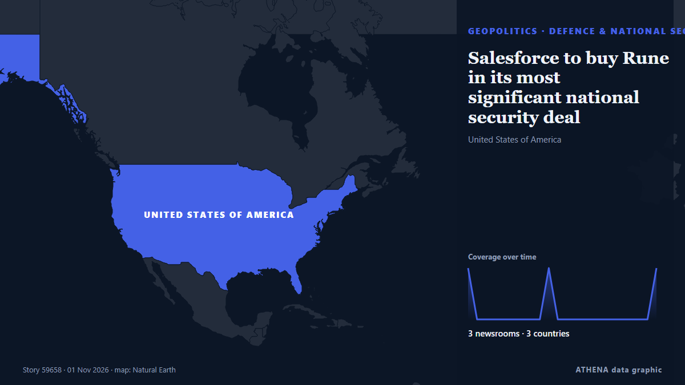

Defence & national security
| 19 Oct | 0 |
|---|---|
| 20 Oct | 1 |
| 21 Oct | 0 |
| 22 Oct | 0 |
| 23 Oct | 0 |
| 24 Oct | 0 |
| 25 Oct | 0 |
| 26 Oct | 1 |
| 27 Oct | 3 |
| 28 Oct | 3 |
| 29 Oct | 9 |
| 30 Oct | 7 |
| 31 Oct | 0 |
| 1 Nov | 0 |

Salesforce to buy Rune in its most significant national security deal
Salesforce has agreed to buy Rune Technologies. from The Next Web
Hanwha Defense USA wins $269 mil. US Navy shipbuilding contract
Hanwha Defense USA (HDUSA), a subsidiary of South Korea's Hanwha Aerospace Co., has secured a $269 million contract to build a medium landing ship (LSM) for the U.S. from The Korea Times
IN BRIEF: Russia pounds Ukraine’s defense plants, energy sites in massive overnight strike
In the city of Kiev, the strike hit a missile assembly and components plant manufacturing components for reconnaissance and strike drones, the Russian Defense Ministry reported. from TASS (English)
‘Surrender’ absent from Iranian people’s vocabulary — chief of staff
Habibollah Sayyari stressed that the Islamic Republic considers itself victorious on the battlefield and will never bow to its enemies. from TASS (English)
‘THEMISTOCLES’: The fourth FDI, but the first to be built to the Standard 2++ configuration
Naftemporiki is in France for the FDI frigate “THEMISTOCLES”, the fourth and final Belharra-class vessel for the Hellenic Navy. from Naftemporiki (English)
Pentagon tells Europeans to cool their rhetoric on Russia, sources say
US message reflect debate within NATO to publicly address threat of increasingly assertive Russia. from Express Tribune
Poland to transfer two more MiG-29 fighter jets to Ukraine
Poland will soon transfer two more MiG-29 fighter jets to Ukraine as part of a new military aid package worth around EUR 50 million. from Ukrinform (English)
EU urges member states to tap €21.3 billion SAFE fund to boost defence, support Ukraine
The European Commission urged member states on Thursday to apply for loans from a €21.3 billion ($23.74 billion) pot available through the European Union’s SAFE defence funding programme to boost… from Cyprus Mail
Canada unveils 1st national security strategy in over 20 years
Prime minister launches 'Plan for a Stronger Canada' focused on economic security, defense, intelligence. from Anadolu Agency (English)
Manufacturer of Ruta cruise missiles used by Ukraine's defence forces reveals production figures – video
European company Destinus says it has produced 1,750 Ruta B1 cruise missiles, with monthly output nearing 300 units and a range of over 300 km. from Ukrainska Pravda (English)
U.S. Navy Awards $23.13 Million Contract To Strengthen Warship Cybersecurity
The US Navy has awarded a $23.13 million contract to develop ways to protect warship electrical systems from cyberattacks. from Marine Insight
Australian defence chief says China military buildup creating 'pressure' in Southeast Asia
"Now is a time to double down on friends and to double down on neighbours and to be working more closely together to provide for our collective security," said Australian Defence Minister Richard… from CNA (Channel NewsAsia)
US and Japan, long alarmed by China’s aggression, agree to establish missile-production facility
CEBU, Philippines: The United States and Japan have agreed to establish a Japanese facility for the joint production of advanced medium-range air-to-air missiles, the Japanese defense chief said late… from Arab News
Hegseth fires the Pentagon's top military planner even as Trump considers new Iran strikes
President Trump is headed for a showdown with Democrats and members of his party after Election Day over Secretary of Defense Pete Hegseth’s future leadership of the Pentagon, the Iran war and the… from The Hill
Australia considers Iron Dome-style missile shield
Discussions are being held over the availability of the US Patriot missile defence system and Israeli-made Rafael interceptors. from Free Malaysia Today
Taiwan flags ‘obvious’ threat from 50 Chinese vessels in wide sweep of waters
China has more than 50 navy and other official vessels operating in a wide swath of… from BusinessWorld
Ethiopia Says It Got 12 Russian Fighter Jets
Prime Minister Abiy Ahmed says Ethiopia received 12 Su-35 fighters from Russia on 28 October. from The Rio Times
Robotic turrets operated by private air defence units have destroyed over 60 targets
Brave1 reports that robotic systems deployed by non-state anti-aircraft brigades have successfully shot down dozens of threats, including missiles and drones. from Ukrainska Pravda (English)